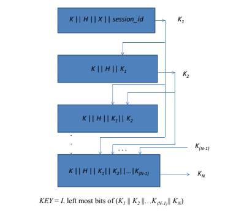

NIST Special Publication · PDF 原文抽出
Recommendation for Existing Application-Specific Key Derivation Functions
既存のアプリケーション固有鍵導出関数に関する推奨事項
NIST SP 800-135 Rev. 1（Recommendation for Existing Application-Specific Key Derivation Functions）の英文と日本語訳を段落ごとに並べた閲覧用ページです。IKE、TLS、SSH、SRTP、SNMP、TPMなどの既存プロトコルで使われるアプリケーション固有の鍵導出関数について、セキュリティ要件を示します。 翻訳は非公式です。要件の確認にはNIST の正式版 PDFを参照してください。
PDF から抽出した原文は原本との照合待ちです。
NIST Special Publication 800-135
NIST特別刊行物 800-135
Revision 1
改訂1
Recommendation for Existing Application-Specific Key Derivation Functions
既存のアプリケーション固有鍵導出関数に関する推奨事項
Quynh Dang
Quynh Dang
Computer Security Division Information Technology Laboratory
コンピュータセキュリティ部門 情報技術研究所
C O M P U T E R S E C U R I T Y
コ ン ピ ュ ー タ セ キ ュ リ テ ィ
December 2011
2011年12月
米国商務省の紋章。
U.S. Department of Commerce
米国商務省
John Bryson, Secretary
John Bryson 長官
National Institute of Standards and Technology
国立標準技術研究所
Patrick D. Gallagher, Under Secretary for Standards and Technology and Director
Patrick D. Gallagher、標準技術担当商務次官兼所長
Abstract
要約
Cryptographic keys are vital to the security of internet security applications and protocols. Many widely-used internet security protocols have their own application-specific Key Derivation Functions (KDFs) that are used to generate the cryptographic keys required for their cryptographic functions. This Recommendation provides security requirements for those KDFs.
暗号鍵は、インターネットセキュリティのアプリケーションおよびプロトコルの安全性に不可欠である。広く利用されている多くのインターネットセキュリティプロトコルは、それぞれの暗号機能に必要な暗号鍵を生成するために用いられる、独自のアプリケーション固有鍵導出関数（KDF）を持つ。本推奨事項は、これらのKDFに対するセキュリティ要件を示す。
KEY WORDS: Cryptographic key, shared secret, Diffie-Hellman (DH) key exchange, hash function, Key Derivation Function (KDF), Hash-based Key Derivation Function, Randomness Extraction, Key expansion, Pseudorandom Function (PRF), HMAC, ANS X9.42-2001, ANS X9.63-2001, IKE, SSH, TLS, SRTP, SNMP and TPM.
キーワード：暗号鍵、共有秘密、Diffie-Hellman（DH）鍵交換、ハッシュ関数、鍵導出関数（KDF）、ハッシュベース鍵導出関数、乱数抽出、鍵拡張、疑似ランダム関数（PRF）、HMAC、ANS X9.42-2001、ANS X9.63-2001、IKE、SSH、TLS、SRTP、SNMPおよびTPM。
Acknowledgements
謝辞
The author gratefully appreciates the comments and contributions of the many reviewers in various Federal agencies and the public. In particular, the author would like to thank Elaine Barker, William E. Burr, Lily Chen, Tim Polk, Tim Hall, Scott Rose and Hugo Krawczyk.
著者は、さまざまな連邦機関および一般の多くの査読者から寄せられたコメントと貢献に深く感謝する。特に、Elaine Barker、William E. Burr、Lily Chen、Tim Polk、Tim Hall、Scott Rose、Hugo Krawczykに謝意を表する。
Table of Contents
目次
1 Introduction — 2
1 はじめに — 2
2 Authority — 2
2 権限 — 2
3 Glossary of Terms, Acronyms and Mathematical Symbols — 3
3 用語、頭字語および数学記号の用語集 — 3
3.1 Terms and Definitions — 3
3.1 用語および定義 — 3
3.2 Acronyms — 4
3.2 頭字語 — 4
3.3 Symbols & Mathematical Operations — 5
3.3 記号および数学演算 — 5
4 Extraction-then-Expansion (E-E) Key Derivation Procedure — 6
4 抽出後拡張（E-E）鍵導出手順 — 6
4.1 Internet Key Exchange (IKE) — 7
4.1 インターネット鍵交換（IKE）— 7
4.1.1 IKE version 1 (IKEv1) — 8
4.1.1 IKEバージョン1（IKEv1）— 8
4.1.2 IKE version 2 (IKEv2) — 10
4.1.2 IKEバージョン2（IKEv2）— 10
4.2 Key Derivation in Transport Layer Security (TLS) — 10
4.2 トランスポート層セキュリティ（TLS）における鍵導出 — 10
4.2.1 Key Derivation in TLS versions 1.0 and 1.1 — 10
4.2.1 TLSバージョン1.0および1.1における鍵導出 — 10
4.2.2 Key Derivation in TLS version 1.2 — 11
4.2.2 TLSバージョン1.2における鍵導出 — 11
5 Other Existing Key Derivation Functions — 12
5 その他の既存の鍵導出関数 — 12
5.1 Key Derivation Functions in American National Standards (ANS) X9.42-2001 and ANS X9.63-2001 — 12
5.1 米国国家規格（ANS）X9.42-2001およびANS X9.63-2001における鍵導出関数 — 12
5.2 Secure Shell (SSH) Key Derivation Function — 13
5.2 Secure Shell（SSH）鍵導出関数 — 13
5.3 The Secure Real-time Transport Protocol (SRTP) Key Derivation Function — 15
5.3 Secure Real-time Transport Protocol（SRTP）鍵導出関数 — 15
5.4 Simple Network Management Protocol (SNMP) Key Derivation Function/Key Localization Function — 16
5.4 Simple Network Management Protocol（SNMP）鍵導出関数／鍵ローカライゼーション関数 — 16
5.5 Trusted Platform Module (TPM) Key Derivation Function — 17
5.5 Trusted Platform Module（TPM）鍵導出関数 — 17
6 References — 18
6 参考文献 — 18
Appendix A — Change Log — 20
付録A — 変更履歴 — 20
Recommendation for Application-Specific Key Derivation Functions
アプリケーション固有鍵導出関数に関する推奨事項
1 Introduction
1 はじめに
This document specifies security requirements for existing application-specific key derivation functions in:
本書は、次に示すものに含まれる既存のアプリケーション固有鍵導出関数に対するセキュリティ要件を規定する：
•American National Standard (ANS) X9.42-2001-Public Key Cryptography for the Financial Services Industry: Agreement of Symmetric Keys Using Discrete Logarithm Cryptography (ANS X9.42-2001) [ANS X9.42] (also in RFC 2631 [RFC 2631]),
•米国規格（ANS）X9.42-2001「金融サービス業界向け公開鍵暗号：離散対数暗号を用いた共通鍵の合意」（ANS X9.42-2001）[ANS X9.42]（RFC 2631 [RFC 2631]にも収録）、
•American National Standard (ANS) X9.63-2001-Public Key Cryptography for the Financial Services Industry: Key Agreement and Key Transport Using Elliptic Curve Cryptography (ANS X9.63-2001) [ANS X9.63] (also in RFC 3278 [RFC 3278]),
•米国規格（ANS）X9.63-2001「金融サービス業界向け公開鍵暗号：楕円曲線暗号を用いた鍵合意および鍵転送」（ANS X9.63-2001）[ANS X9.63]（RFC 3278 [RFC 3278]にも収録）、
•Internet Key Exchange (IKE) (version 1: RFC 2409 [RFC 2409] and version 2: RFC 4306 [RFC 4306]),
•インターネット鍵交換（IKE）（バージョン1：RFC 2409 [RFC 2409]、バージョン2：RFC 4306 [RFC 4306]）、
•Secure Shell (SSH): RFC 4251 [RFC 4251],
•Secure Shell（SSH）：RFC 4251 [RFC 4251]、
•Transport Layer Security (TLS) version 1.0: RFC 2246 [RFC 2246], version 1.1: RFC 4346 [RFC 4346] and version 1.2: RFC 5246 [RFC 5246].
•Transport Layer Security（TLS）バージョン1.0：RFC 2246 [RFC 2246]、バージョン1.1：RFC 4346 [RFC 4346]、バージョン1.2：RFC 5246 [RFC 5246]。
•The Secure Real-time Transport Protocol (SRTP): RFC 3711 [RFC 3711],
•Secure Real-time Transport Protocol（SRTP）：RFC 3711 [RFC 3711]、
•User-based Security Model (USM) for version 3 of the Simple Network Management Protocol (SNMP): RFC 2574 [RFC 2574], and
•Simple Network Management Protocol（SNMP）バージョン3のユーザーベースセキュリティモデル（USM）：RFC 2574 [RFC 2574]、および
•Trusted Platform Module (TPM) (Parts 1 [TPM Principles], 2 [TPM Structures] and 3 [TPM Commands]).
•Trusted Platform Module（TPM）（パート1 [TPM Principles]、2 [TPM Structures]、3 [TPM Commands]）。
2 Authority
2 権限
This publication has been developed by the National Institute of Standards and Technology (NIST) in furtherance of its statutory responsibilities under the Federal Information Security Management Act (FISMA) of 2002, Public Law 107-347.
本刊行物は、2002年連邦情報セキュリティ管理法（FISMA）、公法107-347に基づく法定責任を遂行するため、国立標準技術研究所（NIST）が策定した。
NIST is responsible for developing standards and guidelines, including minimum requirements, for providing adequate information security for all agency operations and assets, but such standards and guidelines shall not apply to national security systems.
NISTは、機関のすべての業務および資産に適切な情報セキュリティを提供するための、最低要件を含む標準およびガイドラインを策定する責任を負う。ただし、これらの標準およびガイドラインは国家安全保障システムには適用されない。
This Recommendation has been prepared for use by federal agencies. It may be used by non-governmental organizations on a voluntary basis and is not subject to copyright. (Attribution would be appreciated by NIST.)
本推奨事項は連邦機関で使用するために作成された。非政府組織も任意に使用でき、著作権の対象ではない。（NISTへの帰属表示を歓迎する。）
Nothing in this document should be taken to contradict standards and guidelines made mandatory and binding on federal agencies by the Secretary of Commerce under statutory authority. Nor should these guidelines be interpreted as altering or superseding the existing authorities of the Secretary of Commerce, Director of the OMB, or any other federal official.
本書のいかなる内容も、法定権限に基づき商務長官が連邦機関に義務付け、拘束力を持たせた標準およびガイドラインに反するものと解釈してはならない。また、本ガイドラインを、商務長官、OMB長官、その他の連邦職員が有する既存の権限を変更または置き換えるものと解釈してはならない。
Conformance testing for implementations of this Recommendation will be conducted within the framework of the Cryptographic Module Validation Program (CMVP) and the Cryptographic Algorithm Validation Program (CAVP). The requirements of this Recommendation are indicated by the word “shall.” Some of these requirements may be out-of-scope for CMVP or CAVP validation testing, and thus are the responsibility of entities using, implementing, installing or configuring applications that incorporate this Recommendation.
本推奨事項の実装に関する適合性試験は、暗号モジュール検証プログラム（CMVP）および暗号アルゴリズム検証プログラム（CAVP）の枠組みで実施される。本推奨事項の要件は「shall」という語で示す。これらの要件の一部はCMVPまたはCAVPの検証試験の範囲外となる場合があり、その場合、本推奨事項を組み込むアプリケーションを使用、実装、インストールまたは構成する主体が責任を負う。
3 Glossary of Terms, Acronyms and Mathematical Symbols
3 用語、頭字語および数学記号の用語集
3.1 Terms and Definitions
3.1 用語および定義
| Algorithm | A clearly specified mathematical process for computation; a set of rules that, if followed, will give a prescribed result. |
| Approved | FIPS-approved and/or NIST-recommended. An algorithm or technique that is either 1) specified in a FIPS or NIST Recommendation, 2) adopted in a FIPS or NIST Recommendation or 3) specified in a list of NIST-approved security functions. |
| Approved hash algorithms | Cryptographic hash algorithms specified in FIPS 180-3 [FIPS 180-3]. |
| Block cipher | A family of functions and their inverse functions that is parameterized by cryptographic keys; the functions map bit strings of a fixed length to bit strings of the same length. |
| Cryptographic key (key) | A parameter used in conjunction with a cryptographic algorithm that determines the algorithm’s operation in such a way that an entity with knowledge of the key can reproduce or reverse the operation, while an entity without knowledge of the key cannot. Examples include: 1. The transformation of plaintext data into ciphertext data, 2. The transformation of ciphertext data into plaintext data, |
原本PDFの抜粋画像

| アルゴリズム | 計算のために明確に規定された数学的手順。従えば所定の結果が得られる規則の集合。 |
| 承認済み | FIPS承認済みおよび／またはNIST推奨。1）FIPSまたはNIST推奨事項に規定される、2）FIPSまたはNIST推奨事項に採用される、または3）NIST承認済みセキュリティ機能の一覧に規定されるアルゴリズムまたは技法。 |
| 承認済みハッシュアルゴリズム | FIPS 180-3 [FIPS 180-3]に規定される暗号ハッシュアルゴリズム。 |
| ブロック暗号 | 暗号鍵でパラメータ化された関数とその逆関数の集合。これらの関数は、固定長のビット列を同じ長さのビット列に写像する。 |
| 暗号鍵（鍵） | 暗号アルゴリズムとともに使用され、その鍵を知る主体は処理を再現または逆転できる一方、鍵を知らない主体にはできないように、アルゴリズムの動作を決定するパラメータ。例：1. 平文データを暗号文データに変換すること、2. 暗号文データを平文データに変換すること、 |
| 3. The computation of a digital signature from data, 4. The verification of a digital signature, 5. The computation of an authentication code from data, 6. The verification of an authentication code from data and a received authentication code. | |
| Key agreement primitive | A DLC primitive specified in SP 800-56A [SP 800-56A] or an RSA Secret Value Encapsulation (RSASVE) operation specified in SP 800-56B [SP 800-56B]. |
| Key derivation key | A key that is used as an input to a key derivation function or key expansion function to derive other keys. |
| Nonce | A time-varying value that has at most a negligible chance of repeating; for example, a random value that is generated anew for each use, a time-stamp, a sequence number, or some combination of these. It can be a secret or non-secret value. |
| Pre-shared key | A secret key that is established between communicating parties before a communication protocol starts. |
| Pseudorandom function (PRF) | A function that can be used to generate output from a random seed and a data variable, such that the output is computationally indistinguishable from truly random output. |
| Pseudorandom key | As used in this Recommendation, a binary string that is taken from the output of a PRF. |
| Secret keying material | The binary data that is used to form secret keys, such as AES encryption keys or HMAC keys. |
| Shall | This term is used to indicate a requirement that needs to be fulfilled to claim conformance to this Recommendation. Note that shall may be coupled with not to become shall not. |
| Shared secret | A secret value that has been computed using a key agreement algorithm. |
| Should | This term is used to indicate an important recommendation. Ignoring the recommendation could result in undesirable results. Note that should may be coupled with not to become should not. |
原本PDFの抜粋画像

| 3. データからデジタル署名を計算すること、4. デジタル署名を検証すること、5. データから認証コードを計算すること、6. データと受信した認証コードから認証コードを検証すること。 | |
| 鍵合意プリミティブ | SP 800-56A [SP 800-56A]に規定されるDLCプリミティブ、またはSP 800-56B [SP 800-56B]に規定されるRSA秘密値カプセル化（RSASVE）操作。 |
| 鍵導出鍵 | 他の鍵を導出するために、鍵導出関数または鍵拡張関数への入力として使用される鍵。 |
| nonce | 繰り返す確率が無視できるほど小さい、時間とともに変化する値。例：使用のたびに新たに生成される乱数、タイムスタンプ、シーケンス番号、またはこれらの組み合わせ。秘密値でも非秘密値でもよい。 |
| 事前共有鍵 | 通信プロトコルの開始前に通信当事者間で確立される秘密鍵。 |
| 疑似ランダム関数（PRF） | ランダムシードとデータ変数から出力を生成するために使用でき、その出力が真にランダムな出力と計算上区別できない関数。 |
| 疑似ランダム鍵 | 本推奨事項で用いる意味では、PRFの出力から得られるビット列。 |
| 秘密鍵素材 | AES暗号鍵やHMAC鍵など、秘密鍵を構成するために使用されるバイナリデータ。 |
| shall | 本推奨事項への適合を主張するために満たす必要のある要件を示す語。この語にnotを付けてshall notとする場合がある。 |
| 共有秘密 | 鍵合意アルゴリズムを用いて計算された秘密値。 |
| should | 重要な推奨事項を示す語。この推奨事項を無視すると望ましくない結果になる可能性がある。この語にnotを付けてshould notとする場合がある。 |
3.2 Acronyms
3.2 頭字語
| ANS | American National Standard |
| CMAC | Block Cipher-based Message Authentication Code |
| DLC | Discrete Logarithm Cryptography |
原本PDFの抜粋画像

| ANS | 米国規格 |
| CMAC | ブロック暗号ベースメッセージ認証コード |
| DLC | 離散対数暗号 |
| E-E | Extraction-then-Expansion |
| FIPS | Federal Information Processing Standard |
| HKDF | Hash-based Key Derivation Function |
| IETF | Internet Engineering Task Force |
| IKE | Internet Key Exchange |
| IKEv1 | IKE version 1 |
| IKEv2 | IKE version 2 |
| KDF | Key Derivation Function |
| MAC | Message Authentication Code |
| NIST | National Institute of Standards and Technology |
| PRF | Pseudorandom Function |
| RFC | Request for Comments |
| SA | Security Association |
| SHA | Secure Hash Algorithm |
| SSH | Secure Shell |
| SP | Special Publication |
| TLS | Transport Layer Security |
| TPM | Trusted Platform Module |
原本PDFの抜粋画像

| E-E | 抽出後拡張 |
| FIPS | 連邦情報処理標準 |
| HKDF | ハッシュベース鍵導出関数 |
| IETF | インターネット技術特別調査委員会 |
| IKE | インターネット鍵交換 |
| IKEv1 | IKEバージョン1 |
| IKEv2 | IKEバージョン2 |
| KDF | 鍵導出関数 |
| MAC | メッセージ認証コード |
| NIST | 国立標準技術研究所 |
| PRF | 疑似ランダム関数 |
| RFC | コメント募集 |
| SA | セキュリティアソシエーション |
| SHA | セキュアハッシュアルゴリズム |
| SSH | セキュアシェル |
| SP | 特別刊行物 |
| TLS | トランスポート層セキュリティ |
| TPM | トラステッドプラットフォームモジュール |
3.3 Symbols & Mathematical Operations
3.3 記号および数学演算
AES(k, input) — A single AES encryption operation as specified in FIPS 197 [FIPS 197] with k and input being the AES encryption key and one 128-bit block of plaintext/data, respectively.
AES(k, input) — FIPS 197 [FIPS 197]で規定される1回のAES暗号化演算。kとinputは、それぞれAES暗号鍵および1つの128ビットの平文／データブロックである。
g^xy — Diffie-Hellman (DH) key exchange value, also called a DH shared secret (in IKE version 1).
g^xy — Diffie-Hellman（DH）鍵交換値。DH共有秘密とも呼ばれる（IKEバージョン1の場合）。
g^ir — DH key exchange value, also called a DH shared secret (in IKE version 2).
g^ir — DH鍵交換値。DH共有秘密とも呼ばれる（IKEバージョン2の場合）。
|| — Concatenation operation; for example, a || b means that string b is appended after string a.
|| — 連結演算。例えば、a || bは文字列aの後に文字列bを追加することを意味する。
0x0X — 8-bit binary representation of the hexadecimal number X, for example, 0x02 = 00000010.
0x0X — 16進数Xの8ビット2進表現。例えば、0x02 = 00000010。
| HASH | A cryptographic hash function, such as SHA-1. |
| HMAC-HASH | The HMAC algorithm using the hash function, HASH (e.g., HASH could be SHA-1). See FIPS 198-1 for the specification of the HMAC algorithm using one of the approved hash functions. |
| HMAC-PRF | The HMAC function being used as a PRF. |
| P_HASH | A function that uses the HMAC-HASH as the core function in its construction. The specification of this function is in RFCs 2246 and 5246. |
| HASH | SHA-1などの暗号ハッシュ関数。 |
| HMAC-HASH | ハッシュ関数HASHを用いるHMACアルゴリズム（例えばHASHにSHA-1を使用できる）。承認済みハッシュ関数のいずれかを用いるHMACアルゴリズムの仕様については、FIPS 198-1を参照。 |
| HMAC-PRF | PRFとして使用されるHMAC関数。 |
| P_HASH | 構成の中核関数としてHMAC-HASHを用いる関数。この関数の仕様はRFC 2246およびRFC 5246に記載されている。 |
a | x — a divides x.
a | x — aはxを割り切る。
⌈x⌉ — The ceiling of x; the smallest integer ≥ x. For example, ⌈5⌉ = 5 and ⌈5.2⌉ = 6.
⌈x⌉ — xの天井関数。x以上の最小の整数。例えば、⌈5⌉ = 5、⌈5.2⌉ = 6。
⌊x⌋ — The floor of x; the largest integer ≤ x. For example, ⌊5⌋ = 5 and ⌊6.9⌋ = 6.
⌊x⌋ — xの床関数。x以下の最大の整数。例えば、⌊5⌋ = 5、⌊6.9⌋ = 6。
len(x) — The length of the string x in bits.
len(x) — ビット単位で表した文字列xの長さ。
⊕ — A bitwise logical operation such that 1 ⊕ 1 = 0, 1 ⊕ 0 = 1, 0 ⊕ 0 = 0, and 0 ⊕ 1 = 1. For example, given a string A = 10 and a string B = 11, then A ⊕ B = (1 ⊕ 1) || (0 ⊕ 1) = 01.
⊕ — 1 ⊕ 1 = 0、1 ⊕ 0 = 1、0 ⊕ 0 = 0、0 ⊕ 1 = 1となるビット単位の論理演算。例えば、文字列A = 10、文字列B = 11の場合、A ⊕ B = (1 ⊕ 1) || (0 ⊕ 1) = 01。
XOR — A XOR B is equivalent to A ⊕ B. See the definition of the bitwise logical operation ⊕ above.
XOR — A XOR BはA ⊕ Bと同じである。上記のビット単位論理演算⊕の定義を参照。
Pre-shared-key — A secret key that has previously been established. See “pre-shared key” in Section 3.1 above.
Pre-shared-key — あらかじめ確立された秘密鍵。上記3.1節の「事前共有鍵」を参照。
SKEY — A session key in TPM.
SKEY — TPMにおけるセッション鍵。
4 Extraction-then-Expansion (E-E) Key Derivation Procedure
4 抽出後拡張（E-E）鍵導出手順
NIST has specified several key derivation functions (KDFs) in SP 800-56A, SP 800-56B and SP 800-108 [SP 800-108]. SP 800-56C [SP 800-56C] specifies an additional KDF that is an extraction-then-expansion (E-E) procedure, which has a different structure from the KDFs in SP 800-56A, SP 800-56B and SP 800-108. The procedure consists of two separate steps: a randomness extraction step and a key expansion step. The general specification of the E-E procedure is in SP 800-56C, which provides an additional method for deriving keys when performing a key establishment scheme as specified in SP 800-56A and SP 800-56B . Figure 1 below shows the relationship of the E-E procedure in SP 800-56C with the approved KDFs in SP 800-108. In Figure 1, the randomness extraction step outputs a key derivation key, which is then used as input to the key expansion step. Any approved KDFs in SP 800-108 can be used as the key expansion step that derives keying material and can also be used to derive more keying material from the key expansion step’s derived key(s)/keying material. The following sections discuss protocols that use the E-E procedure. Note that even though the KDFs in these protocols use the E-E procedure for key derivation, their specific randomness extraction and/or key expansion step(s) do not meet all specification of SP 800-56C. These KDFs are only approved for use within the limitations described in the corresponding sections later in this document.
NISTはSP 800-56A、SP 800-56BおよびSP 800-108 [SP 800-108]で複数の鍵導出関数（KDF）を規定している。SP 800-56C [SP 800-56C]では、抽出後拡張（E-E）手順である追加のKDFを規定しており、これはSP 800-56A、SP 800-56BおよびSP 800-108のKDFとは構造が異なる。この手順は、乱数抽出ステップと鍵拡張ステップの2つの独立したステップから成る。E-E手順の一般仕様はSP 800-56Cに記載されており、同文書はSP 800-56AおよびSP 800-56Bに規定される鍵確立方式を実行する際の追加の鍵導出方法を提供する。以下の図1は、SP 800-56CのE-E手順とSP 800-108の承認済みKDFとの関係を示す。図1では、乱数抽出ステップが鍵導出鍵を出力し、これが鍵拡張ステップへの入力として使用される。SP 800-108の承認済みKDFはいずれも、鍵素材を導出する鍵拡張ステップとして使用でき、鍵拡張ステップで導出した鍵／鍵素材からさらに鍵素材を導出するためにも使用できる。以降の節ではE-E手順を使用するプロトコルを説明する。なお、これらのプロトコルのKDFは鍵導出にE-E手順を使用するものの、その個別の乱数抽出ステップおよび／または鍵拡張ステップはSP 800-56Cの仕様のすべてを満たしてはいない。これらのKDFは、本書の後の該当節に記載する制限の範囲内でのみ使用が承認される。

抽出後拡張手順の図。鍵合意プリミティブが共有秘密を生成し、抽出段階、拡張段階、SP 800-108 KDFを経て導出鍵素材を生成する。
Figure 1: Key Derivation
図1：鍵導出
4.1 Internet Key Exchange (IKE)
4.1 インターネット鍵交換（IKE）
Versions 1 and 2 of the Internet Key Exchange (IKE) are specified in RFC 2409 and RFC 4306, respectively, and use HMAC-based Pseudorandom Functions (PRFs) in their KDFs to generate keying material for their security associations (SAs). IKEv1¹ and IKEv2 specify multiple PRFs, including those based on HMAC and block ciphers. Only an approved hash function and HMAC function shall be used.
インターネット鍵交換（IKE）のバージョン1および2は、それぞれRFC 2409およびRFC 4306で規定され、セキュリティアソシエーション（SA）の鍵素材を生成するKDFにHMACベースの疑似乱数関数（PRF）を使用する。IKEv1¹およびIKEv2は、HMACおよびブロック暗号に基づくものを含む複数のPRFを規定する。承認済みハッシュ関数およびHMAC関数のみを使用しなければならない。
4.1.1 IKE version 1 (IKEv1)
4.1.1 IKEバージョン1（IKEv1）
In IKEv1, a string called SKEYID is derived from secret material known only to the communicating parties. An HMAC-PRF is used to produce the SKEYID. The secret material that is input to the HMAC function is either a Diffie-Hellman shared secret g^xy, secret nonces generated by both of the communicating parties, or a pre-shared key. In the protocol, the method used to generate SKEYID depends on the authentication method. One of the following three different functions is used as a randomness extraction step to produce the SKEYID: 1) When digital signatures are used for authentication, the function is: SKEYID = HMAC (Ni_b || Nr_b, g^xy), where Ni_b and Nr_b are non-secret
IKEv1では、通信当事者だけが知る秘密素材からSKEYIDという文字列を導出する。SKEYIDの生成にはHMAC-PRFを使用する。HMAC関数への入力となる秘密素材は、Diffie-Hellman共有秘密g^xy、通信する両当事者が生成する秘密ノンス、または事前共有鍵のいずれかである。プロトコルでは、SKEYIDの生成方法は認証方式によって異なる。SKEYIDを生成する乱数抽出ステップには、次の3種類の関数のいずれかを使用する。1) デジタル署名を認証に用いる場合、関数は次のとおりである：SKEYID = HMAC (Ni_b || Nr_b, g^xy)。ここでNi_bおよびNr_bは非秘密の
未レビュー訳values. 2) When a public key algorithm encryption is used for authentication, the function is: SKEYID = HMAC (HASH (Ni_b || Nr_b), CKY-I || CKY-R), where Ni_b and Nr_b are secret nonces, and CKY-I and CKY-R are non-secret values. 3) When a pre-shared key is used for authentication, the function is: SKEYID = HMAC (pre-shared-key, Ni_b || Nr_b), where Ni_b and Nr_b are non-secret values. Additional technical details for the variables in the functions are provided in RFC
2) 公開鍵暗号アルゴリズムを認証に用いる場合、関数は次のとおりである：SKEYID = HMAC (HASH (Ni_b || Nr_b), CKY-I || CKY-R)。ここでNi_bおよびNr_bは秘密ノンス、CKY-IおよびCKY-Rは非秘密値である。3) 事前共有鍵を認証に用いる場合、関数は次のとおりである：SKEYID = HMAC (pre-shared-key, Ni_b || Nr_b)。ここでNi_bおよびNr_bは非秘密値である。関数の変数に関する追加の技術詳細はRFC
2409. The appropriate PRF (i.e., the HMAC functions 1-3 above) is executed only once to generate the SKEYID. After the randomness extraction step above, the SKEYID is fed into a feedback function that performs the key expansion step and produces the necessary keying material. The resulting keying material is defined by the following equations: SKEYID_d = HMAC (SKEYID, g^xy || CKY-I || CKY-R || 0) (SKEYID_d is used as the key derivation key to generate fresh keying material for new, negotiated security associations.) SKEYID_a = HMAC (SKEYID, SKEYID_d || g^xy || CKY-I || CKY-R || 1) (SKEYID_a is used as an HMAC key to authenticate the current security association’s messages.) SKEYID_e = HMAC (SKEYID, SKEYID_a || g^xy || CKY-I || CKY-R || 2)
2409。適切なPRF（すなわち、上記1～3のHMAC関数）は、SKEYIDを生成するために1回だけ実行する。上記の乱数抽出ステップの後、SKEYIDをフィードバック関数に入力して鍵拡張ステップを実行し、必要な鍵素材を生成する。生成される鍵素材は、次の式で定義される。SKEYID_d = HMAC (SKEYID, g^xy || CKY-I || CKY-R || 0)（SKEYID_dは、新たにネゴシエートされたSA用の新しい鍵素材を生成する鍵導出鍵として使用する。）SKEYID_a = HMAC (SKEYID, SKEYID_d || g^xy || CKY-I || CKY-R || 1)（SKEYID_aは、現在のSAのメッセージを認証するHMAC鍵として使用する。）SKEYID_e = HMAC (SKEYID, SKEYID_a || g^xy || CKY-I || CKY-R || 2)
未レビュー訳(SKEYID_e is used as a key derivation key to derive a symmetric encryption key to provide confidentiality for the current SA’s messages. More details about this function can be found in Appendix B of RFC 2409.) CKY-I and CKY-R are non-secret values. The technical details of these variables are provided in RFC 2409. Figure 2 below shows the feedback function that produces the SKEYID_d, SKEYID_a and SKEYID_e above. This function conforms to the specification of the key expansion step in SP 800-56C.
（SKEYID_eは、現在のSAのメッセージに機密性を提供する対称暗号鍵を導出するための鍵導出鍵として使用する。この関数の詳細はRFC 2409の付録Bを参照。）CKY-IおよびCKY-Rは非秘密値である。これらの変数の技術詳細はRFC 2409に記載されている。次の図2は、前述のSKEYID_d、SKEYID_a、およびSKEYID_eを生成するフィードバック関数を示す。この関数はSP 800-56Cの鍵拡張ステップの仕様に適合する。

IKEv1のHMACフィードバック図。SKEYIDと共有入力から3つのHMAC計算を行い、SKEYID_d、SKEYID_a、SKEYID_eを生成する。
Figure 2: Key expansion Step in IKEv1
図2：IKEv1の鍵拡張ステップ
Note that both SKEYID and the Diffie-Hellman shared secret g^xy are secret values and are used as inputs to the HMAC in the key expansion step. Also note that all three resulting keys (i.e., SKEYID_d, SKEYID_a and SKEYID_e) are pseudorandom keys. The IKEv1² KDFs are approved when the following conditions are satisfied: (1) The IKEv1 KDFs are performed in the context of the IKEv1 protocol. (2) The PRF is an HMAC-based PRF. (3) The HMAC and HASH are NIST-approved algorithms and are used as specified in FIPSs 198-1 [FIPS 198-1] and 180-3, respectively.
SKEYIDとDiffie-Hellman共有秘密g^xyはどちらも秘密値であり、鍵拡張ステップでHMACへの入力として使用される。生成される3つの鍵（SKEYID_d、SKEYID_a、およびSKEYID_e）は、いずれも疑似乱数鍵であることにも注意する。次の条件を満たす場合、IKEv1² KDFは承認される。(1) IKEv1 KDFをIKEv1プロトコルの文脈で実行する。(2) PRFがHMACベースである。(3) HMACとHASHがNIST承認アルゴリズムであり、それぞれFIPS 198-1 [FIPS 198-1]および180-3の規定に従って使用される。
4.1.2 IKE version 2 (IKEv2)
4.1.2 IKEバージョン2（IKEv2）
In IKEv2, an HMAC is used as a randomness extraction step to extract randomness from a Diffie-Hellman shared secret (g^ir ) and to uniformly distribute the randomness across the output (SKEYSEED). The function to produce SKEYSEED is: SKEYSEED = HMAC (Ni || Nr, g^ir). Ni and Nr are nonces generated by the protocol initiator and responder, respectively; see RFC 4306 for more details. This function acts as the randomness extraction step of the E-E KDF. After the SKEYSEED is generated, a key expansion step is used to derive keys for the security association (SA). SKEYSEED is the key derivation key for the key expansion step. The string of concatenated non-secret attributes: Ni || Nr || SPIi || SPIr³ is the fixed input message P field in SP 800-56C. Information about these non-secret attributes can be found in RFC 4306. The specification of the key expansion step can be found in Sections 2.13 and 2.14 of the RFC. Note that as shown in Figure 1, the keying material generated by this key expansion step is the output of the E-E procedure. One of the seven secret keys derived from the SKEYSEED is called SK_d. It is used as the key derivation key to derive new keys for child SA(s) using another KDF that is functionally the same as the key expansion step, but with a different set of attributes. One of the attributes is an optional new Diffie-Hellman shared secret established during the creation of the child SA. Details of this function can be found in Sections 2.17 and 2.18 of RFC 4306. The IKEv2 KDFs, which are compliant with SP 800-56C, are approved when used with an approved HMAC function using an approved hash function; see FIPSs 198-1 and 180-3, respectively. These KDFs are included here for completeness.
IKEv2では、HMACを乱数抽出ステップとして用い、Diffie-Hellman共有秘密（g^ir）からランダム性を抽出し、そのランダム性を出力（SKEYSEED）全体に一様に分配する。SKEYSEEDを生成する関数は次のとおりである：SKEYSEED = HMAC (Ni || Nr, g^ir)。NiおよびNrは、それぞれプロトコルのイニシエーターとレスポンダーが生成するノンスである。詳細はRFC 4306を参照。この関数はE-E KDFの乱数抽出ステップとして機能する。SKEYSEEDの生成後、鍵拡張ステップによってSA用の鍵を導出する。SKEYSEEDは鍵拡張ステップの鍵導出鍵である。連結された非秘密属性文字列Ni || Nr || SPIi || SPIr³は、SP 800-56Cにおける固定入力メッセージPフィールドである。これらの非秘密属性の情報はRFC 4306を参照。鍵拡張ステップの仕様はRFCの2.13節および2.14節に記載されている。図1に示すように、この鍵拡張ステップで生成される鍵素材はE-E手順の出力である。SKEYSEEDから導出される7つの秘密鍵のうちの1つをSK_dと呼ぶ。これは、別のKDFを用いて子SA用の新しい鍵を導出する鍵導出鍵として使用する。このKDFは鍵拡張ステップと機能的に同じだが、属性の組み合わせが異なる。属性の1つは子SAの作成時に確立される、オプションの新しいDiffie-Hellman共有秘密である。この関数の詳細はRFC 4306の2.17節および2.18節を参照。IKEv2 KDFはSP 800-56Cに適合しており、承認済みハッシュ関数を用いる承認済みHMAC関数とともに使用する場合に承認される。FIPS 198-1および180-3をそれぞれ参照。これらのKDFは網羅性のために本書に含める。
4.2 Key Derivation in Transport Layer Security (TLS)
4.2 トランスポート層セキュリティ（TLS）における鍵導出
In TLS, after a cipher suite negotiation is completed, a Diffie-Hellman (DH) key agreement or RSA key transport scheme is used to generate a pre-master secret. When RSA key transport is used, the pre-master secret is a random value generated by the client. When the DH key agreement scheme is used, the pre-master secret is the shared secret generated by the key agreement scheme.
TLSでは、暗号スイートのネゴシエーション完了後、Diffie-Hellman（DH）鍵合意またはRSA鍵転送方式を用いてプレマスターシークレットを生成する。RSA鍵転送を使用する場合、プレマスターシークレットはクライアントが生成する乱数値である。DH鍵合意方式を使用する場合、プレマスターシークレットは鍵合意方式で生成される共有秘密である。
4.2.1 Key Derivation in TLS versions 1.0 and 1.1
4.2.1 TLSバージョン1.0および1.1における鍵導出
In TLS versions 1.0 and 1.1 (TLS 1.0 and 1.1), the pre-master secret is input into an HMAC-MD5/HMAC-SHA-1 PRF4 with some non-secret values to produce a master secret; the PRF acts as the randomness extraction step in an E-E KDF. The master secret is then input into the HMAC-MD5/HMAC-SHA1 PRF with other non-secret values to derive keying material for the negotiated cryptographic functions; in this case, the PRF acts as the key expansion step in the E-E KDF. The HMAC-MD5/HMAC-SHA1 PRF contains two functions: P_MD5 and P_SHA1, which use MD5-HMAC and SHA-1-HMAC as the core functions, respectively. The specifications of P_MD5 and P_SHA-1 are in Section 5 of RFC 2246 (the function called P_hash in the RFC). The P_HASH function (P_MD5 or P_SHA-1) uses the double-pipeline iteration mode and HMAC-PRF specified in SP 800-108. The outputs from both P_MD5 and P_SHA-1 are XORed together to produce the PRF output. This PRF is used as both a randomness extraction step to generate the master secret and as a key expansion step to derive keying material for the protocol from the master secret. The TLS 1.0 and 1.1 KDF is approved when the following conditions are satisfied: (1) The TLS 1.0 and 1.1 KDF is performed in the context of the TLS protocol. (2) SHA-1 and HMAC are as specified in FIPSs 180-3 and 198-1, respectively. Note that MD5 and HMAC-MD5 shall not be used as a general hash function or HMAC function, respectively.
TLSバージョン1.0および1.1（TLS 1.0および1.1）では、プレマスターシークレットをいくつかの非秘密値とともにHMAC-MD5/HMAC-SHA-1 PRF⁴に入力し、マスターシークレットを生成する。このPRFはE-E KDFの乱数抽出ステップとして機能する。次に、マスターシークレットを他の非秘密値とともにHMAC-MD5/HMAC-SHA1 PRFに入力し、ネゴシエートされた暗号機能用の鍵素材を導出する。この場合、PRFはE-E KDFの鍵拡張ステップとして機能する。HMAC-MD5/HMAC-SHA1 PRFは、コア関数としてそれぞれMD5-HMACおよびSHA-1-HMACを使用する2つの関数P_MD5とP_SHA1から成る。P_MD5およびP_SHA-1の仕様（RFCでP_hashと呼ばれる関数）はRFC 2246の第5節に記載されている。P_HASH関数（P_MD5またはP_SHA-1）は、SP 800-108で規定される二重パイプライン反復モードおよびHMAC-PRFを使用する。P_MD5およびP_SHA-1の出力をXOR演算してPRF出力を生成する。このPRFは、マスターシークレットを生成する乱数抽出ステップと、マスターシークレットからプロトコル用の鍵素材を導出する鍵拡張ステップの両方に使用される。次の条件を満たす場合、TLS 1.0および1.1 KDFは承認される。(1) TLS 1.0および1.1 KDFをTLSプロトコルの文脈で実行する。(2) SHA-1およびHMACは、それぞれFIPS 180-3および198-1の規定に従う。MD5およびHMAC-MD5を、それぞれ汎用のハッシュ関数または汎用のHMAC関数として使用してはならない。
4.2.2 Key Derivation in TLS version 1.2
4.2.2 TLSバージョン1.2における鍵導出
In TLS version 1.2 (TLS 1.2), the pre-master secret is input into an HMAC-SHA-256 PRF5 with some non-secret values to produce a master secret; the PRF acts as the randomness extraction step in an E-E KDF. The master secret is then input into the HMAC-SHA-256 PRF with some other non-secret values to derive keying material for the negotiated cryptographic functions; in this case, the PRF acts as the key expansion step in the E-E KDF. The HMAC-SHA-256 PRF is P_SHA256. This PRF is used instead of the PRF in TLS 1.0 and 1.1 which is (P_MD5 ⊕ P_SHA-1). In TLS 1.2, in addition to P_SHA256, any P_HASH with a stronger hash function, such as SHA-384 or SHA-512 (in FIPS 180-3), can be used as the PRF. The TLS 1.2 KDF is an approved KDF when the following conditions are satisfied: (1) The TLS 1.2 KDF is performed in the context of the TLS protocol. (2) HMAC is as specified in FIPS 198-1. (3) P_HASH uses either SHA-256, SHA-384 or SHA-512.
TLSバージョン1.2（TLS 1.2）では、プレマスターシークレットをいくつかの非秘密値とともにHMAC-SHA-256 PRF⁵に入力し、マスターシークレットを生成する。このPRFはE-E KDFの乱数抽出ステップとして機能する。次に、マスターシークレットを他のいくつかの非秘密値とともにHMAC-SHA-256 PRFに入力し、ネゴシエートされた暗号機能用の鍵素材を導出する。この場合、PRFはE-E KDFの鍵拡張ステップとして機能する。HMAC-SHA-256 PRFはP_SHA256である。このPRFは、TLS 1.0および1.1で使われるPRF（P_MD5 ⊕ P_SHA-1）の代わりに使用する。TLS 1.2では、P_SHA256に加えて、SHA-384やSHA-512（FIPS 180-3）など、より強いハッシュ関数を使用する任意のP_HASHをPRFとして使用できる。次の条件を満たす場合、TLS 1.2 KDFは承認済みKDFである。(1) TLS 1.2 KDFをTLSプロトコルの文脈で実行する。(2) HMACはFIPS 198-1の規定に従う。(3) P_HASHはSHA-256、SHA-384、またはSHA-512のいずれかを使用する。
5 Other Existing Key Derivation Functions
5 その他の既存の鍵導出関数
In this section, several application-specific KDFs that are not specified in SP 800-56A, SP 800-56B, SP 800-56C or SP 800-108, are considered. They do not follow the extraction-then-expansion procedure in SP 800-56C or may not meet all the specification requirements in either SP 800-56A, SP 800-56B or SP 800-108. The following figure illustrates the application of these KDFs.
本節では、SP 800-56A、SP 800-56B、SP 800-56C、またはSP 800-108で規定されていない、アプリケーション固有の複数のKDFを扱う。これらはSP 800-56Cの抽出後拡張手順に従わない。あるいは、SP 800-56A、SP 800-56B、またはSP 800-108のいずれかの仕様要件のすべてを満たすとは限らない。次の図は、これらのKDFの適用を示す。

処理の図。共有秘密をアプリケーション固有KDFに入力し、K_1からK_nまでの導出鍵素材を生成する。
Figure 3: Application-Specific KDF.
図3：アプリケーション固有KDF
5.1 Key Derivation Functions in American National Standards (ANS) X9.42-2001 and ANS X9.63-2001
5.1 米国国家規格（ANS）X9.42-2001およびANS X9.63-2001における鍵導出関数
There are two hash-based KDFs specified in ANS X9.42-2001 and one hash-based KDF specified in ANS X9.63-2001. These hash-based KDF specifications are similar to (but not the same as) the specifications of the hash-based KDFs specified in SPs 800-56A and B. A shared secret that is generated during a key agreement scheme and other non-secret values are used as input to the hash-based KDF to produce the derived keying material for the application. A counter value is pre-pended to the shared secret in the input to the hash-based KDFs in SPs 800-56A and B, but it is appended to the shared secret in the input to the hash-based KDFs in ANS X9.42-2001 and ANS X9.63-2001. Also, the identifiers of the communicating parties are required in the input to the hash-based KDFs in SPs 800-56A and B, but optional in ANS X9.42-2001 and ANS X9.63-2001.
ANS X9.42-2001にはハッシュベースKDFが2種類、ANS X9.63-2001にはハッシュベースKDFが1種類規定されている。これらの仕様はSP 800-56AおよびBのハッシュベースKDF仕様に類似する（ただし同一ではない）。鍵合意方式で生成した共有秘密とその他の非秘密値をハッシュベースKDFに入力し、アプリケーション用の導出鍵素材を生成する。SP 800-56AおよびBのハッシュベースKDFでは、入力時にカウンター値を共有秘密の前に付加するが、ANS X9.42-2001およびANS X9.63-2001のハッシュベースKDFでは共有秘密の後に付加する。また、SP 800-56AおよびBのハッシュベースKDFでは通信当事者の識別子を入力に含める必要があるが、ANS X9.42-2001およびANS X9.63-2001では任意である。
The hash-based KDFs in ANS X9.42-2001 and ANS X9.63-2001 are approved when the following conditions are satisfied: (1) Each of the hash-based KDFs is performed in the context of an ANS X9.42-2001 or ANS X9.63-2001 key agreement scheme.
ANS X9.42-2001およびANS X9.63-2001のハッシュベースKDFは、次の条件を満たす場合に承認される。(1) 各ハッシュベースKDFをANS X9.42-2001またはANS X9.63-2001の鍵合意方式の文脈で実行する。
(2) The hash function is one of the hash functions specified in FIPS 180-3. (3) The hash function deployed in the hash-based KDF meets the security strength(s) required by the cryptographic function(s) for which the keying material is being generated. The security strengths of approved hash functions used in KDFs can be found in SP 800-57 [SP 800-57]. Note that any KDF that meets the specification of either the ANS X9.42-2001 or ANS X9.63-2001 hash-based KDF and is used in a scheme specified in one of these two Standards is approved when conditions (2) and (3) above are met. For example, the KDF specified in Section 2.1.2 (Generation of Keying Material) of RFC 2631 and the KDF (specified in [SEC1]) used in RFC 3278 are approved.
(2) ハッシュ関数がFIPS 180-3に規定されるハッシュ関数のいずれかである。(3) ハッシュベースKDFで使用するハッシュ関数が、その鍵素材の生成対象である暗号機能が要求するセキュリティ強度を満たす。KDFに使用する承認済みハッシュ関数のセキュリティ強度はSP 800-57 [SP 800-57]を参照。なお、ANS X9.42-2001またはANS X9.63-2001のいずれかのハッシュベースKDFの仕様を満たし、これらのいずれかの規格で定められた方式に使用するKDFは、条件(2)および(3)を満たせば承認される。例えば、RFC 2631の2.1.2節「鍵素材の生成」で規定されるKDF、およびRFC 3278で使用される（[SEC1]で規定される）KDFが承認される。
5.2 Secure Shell (SSH) Key Derivation Function
5.2 Secure Shell（SSH）鍵導出関数
SSH is a protocol used between clients and servers for secure remote login and other secure network services over an insecure network or the Internet. The Internet Engineering Task Force (IETF) governs the SSH protocol (see RFC 4251). The SSH protocol consists of three major components: the Transport Layer Protocol (RFC 4253 [RFC 4253]), the User Authentication Protocol (RFC 4252 [RFC 4252]) and the Connection Protocol (RFC 4254 [RFC 4254]). The Transport Layer Protocol provides server authentication, confidentiality, and integrity.
SSHは、安全でないネットワークまたはインターネット上で、安全なリモートログインやその他の安全なネットワークサービスを提供するため、クライアントとサーバー間で用いるプロトコルである。SSHプロトコルはインターネット技術特別調査委員会（IETF）が管理する（RFC 4251参照）。SSHプロトコルは、トランスポート層プロトコル（RFC 4253 [RFC 4253]）、ユーザー認証プロトコル（RFC 4252 [RFC 4252]）、および接続プロトコル（RFC 4254 [RFC 4254]）の3つの主要な構成要素から成る。トランスポート層プロトコルはサーバー認証、機密性、および完全性を提供する。
Output from a key exchange6 (see Section 7.2 of RFC 4253) in the Transport Layer Protocol is a shared secret, “K”, and a hash value, “H”. In the protocol, K, H and a specific set of other non-secret values are input to a hash function-based KDF to derive keying material. Different KDFs produce keying material for different cryptographic functions; however, the KDFs are similar (see below). The specifications for the KDFs in the Transport Layer Protocol can be found in Section 7.2 of RFC 4253.
トランスポート層プロトコルにおける鍵交換⁶（RFC 4253の7.2節参照）の出力は、共有秘密「K」とハッシュ値「H」である。プロトコルでは、K、H、およびその他の非秘密値の特定の組をハッシュ関数ベースのKDFに入力し、鍵素材を導出する。異なるKDFが異なる暗号機能用の鍵素材を生成するが、それらのKDFは類似している（以下参照）。トランスポート層プロトコルのKDF仕様はRFC 4253の7.2節に記載されている。
The following is a description of the KDF used to derive a key, where HASH denotes a hash function, such as SHA-1 as specified in FIPS 180-3. The key to be derived is denoted by KEY, and the length of KEY is denoted by L. The length of the hash function output is denoted by HASH_Length.
以下に、鍵を導出するKDFを説明する。HASHはFIPS 180-3に規定されるSHA-1などのハッシュ関数を表す。導出する鍵をKEYとし、KEYの長さをLで表す。ハッシュ関数の出力長をHASH_Lengthで表す。
N = ⌈L / Hash_Length⌉
N = ⌈L / Hash_Length⌉
X is a character, such as A, B, C, D, E or F, depending on the type of key desired.
Xは、導出する鍵の種類に応じてA、B、C、D、E、またはFなどとなる文字である。
K₁ = HASH (K || H || X || session_id), where session_id⁷ is a unique identifier for a SSH connection.
K₁ = HASH (K || H || X || session_id)、ここでsession_id⁷はSSH接続を一意に識別する値である。
K₂ = HASH (K || H || K₁)
K₂ = HASH (K || H || K₁)
K₃ = HASH (K || H || K₁ || K₂)
K₃ = HASH (K || H || K₁ || K₂)
…
Kₙ = HASH (K || H || K₁ || K₂ || … || K₍ₙ₋₁₎)
Kₙ = HASH (K || H || K₁ || K₂ || … || K₍ₙ₋₁₎)
KEY = the L left most bits of (K₁ || K₂ || … || Kₙ)
KEY = (K₁ || K₂ || … || Kₙ) の左端からLビット
Figure 4 below shows the accumulative and feedback operation of the KDF.
図4にKDFの累積処理およびフィードバック処理を示す。

SSH KDFの図。K、H、および直前までの導出ブロックを順次ハッシュしてK_iを生成し、連結した値の左端LビットをKEYとする。
Figure 4: SSH KDF
図4：SSH KDF
The SSH KDFs are approved when the following conditions are satisfied: (1) They are performed in the context of the SSH protocol. (2) The hash function is one of the hash functions specified in FIPS 180-3. (3) The hash function deployed in the KDFs meets the security strength(s) required by the cryptographic function(s) for which the keying material is being generated. The security strengths of approved hash functions used in KDFs can be found in SP 800-57.
SSH KDFは、次の条件を満たす場合に承認される。(1) SSHプロトコルのコンテキストで実行される。(2) ハッシュ関数がFIPS 180-3に規定されるハッシュ関数のいずれかである。(3) KDFで使用するハッシュ関数が、生成される鍵素材の用途となる暗号機能が必要とするセキュリティ強度を満たす。KDFで使用する承認済みハッシュ関数のセキュリティ強度は、SP 800-57に示されている。
5.3 The Secure Real-time Transport Protocol (SRTP) Key Derivation Function
5.3 セキュア・リアルタイム・トランスポート・プロトコル（SRTP）鍵導出関数
The SRTP is specified in RFC 3711. The protocol is intended to provide confidentiality, message authentication, and replay protection to the Real-time Transport Protocol (RTP) traffic and to the control traffic for RTP: the Real-time Transport Control Protocol (RTCP) (RFC 3550 [RFC 3550]). Session encryption keys (for a confidentiality service), cipher/encryption salts and authentication keys (for message authentication) in the SRTP are derived from a single master key, called k_master, using a KDF. Note that k_master is used as a key derivation key when input to the KDF. Details of the KDF can be found in Sections 4.3, 5.3 and 7.1 of RFC 3711.
SRTPはRFC 3711に規定されている。このプロトコルは、リアルタイムトランスポートプロトコル（RTP）のトラフィックおよびRTPの制御トラフィックであるリアルタイムトランスポート制御プロトコル（RTCP）（RFC 3550［RFC 3550］）に対して、機密性、メッセージ認証、リプレイ保護を提供することを目的とする。SRTPでは、セッション暗号鍵（機密性サービス用）、暗号／暗号化ソルトおよび認証鍵（メッセージ認証用）は、KDFを使用して、k_master と呼ばれる単一のマスター鍵から導出される。なお、k_master はKDFに入力される際、鍵導出鍵として用いられる。KDFの詳細は、RFC 3711の4.3節、5.3節および7.1節に示されている。
Denote the cryptographic key (encryption key, cipher salt or authentication key (HMAC key), etc…) to be derived as K. The length of K is denoted by L. Below is a description of the KDF.
導出対象の暗号鍵（暗号化鍵、暗号ソルト、認証鍵（HMAC鍵）など）を K とする。K の長さを L と表す。以下にKDFを説明する。
master_salt: a random non-secret value.
master_salt：ランダムな非秘密値。
kdr: the key derivation rate. kdr is a number from the set {0, 1, 2^1, 2^2, 2^3, …, 2^24}.
kdr：鍵導出レート。kdr は集合 {0, 1, 2^1, 2^2, 2^3, ..., 2^24} の値をとる。
index: a 48-bit value in RTP or a 32-bit value in RTCP. See Sections 3.2.1 and 4.3.2 of RFC 3711 for details.
index：RTPでは48ビット値、RTCPでは32ビット値。詳細はRFC 3711の3.2.1節および4.3.2節を参照。
A function, DIV, is defined as followed:
関数 DIV を次のように定義する。
a and x are non-negative integers.
a および x は非負整数である。
a DIV x = ⌊a / x⌋. (a DIV x) is represented as a bit string whose length (in bits) is the same as a.
a DIV x = ⌊a / x⌋。(a DIV x) は、a と同じ長さ（ビット数）のビット列で表される。
label: an 8-bit value represented by two hexadecimal numbers from the set of {0x00, 0x01, 0x02, 0x03, 0x04, 0x05}. In the future, this set might also include any or all of the values 0x06, 0x07,…,0xff.
label：集合 {0x00, 0x01, 0x02, 0x03, 0x04, 0x05} から選ぶ、2桁の16進数で表される8ビット値。将来、この集合に0x06、0x07、...、0xffのいずれか、またはすべての値が追加される可能性がある。
key_id = label || (index DIV kdr)
key_id = label || (index DIV kdr)
input = (key_id ⊕ master_salt) || 0x0000, where key_id and master_salt are right-aligned. More zero bits are pre-pended to the key_id so that len(master_salt) = len(key_id) before the (key_id ⊕ master_salt) operation is performed. After key_id and master_salt are XORed together, the result is then appended with 16 zero bits to form the input, a 128-bit value.
input = (key_id ⊕ master_salt) || 0x0000, ここで、key_id と master_salt は右詰めにする。(key_id ⊕ master_salt)演算の前に、len(master_salt) = len(key_id) となるよう key_id の先頭にゼロビットを追加する。key_id と master_salt のXORをとった後、その結果の末尾に16個のゼロビットを追加して、128ビット値である input を形成する。
The input is used as input to AES-128, AES-192 or AES-256 to produce a session encryption key, cipher salt or authentication key, with k_master being the encryption key. k_master is 128, 192 or 256 bits, depending on which encryption function is used. More details can be found in RFC 6188 [RFC 6188].
input は AES-128、AES-192、または AES-256への入力として用いられ、セッション暗号鍵、暗号ソルト、または認証鍵を生成する。このとき k_master が暗号鍵となる。使用する暗号関数に応じて、k_master は128、192、または256ビットである。詳細はRFC 6188［RFC 6188］を参照。
m = ⌈L / 128⌉ (128 is the bit length of the AES output, and m ≥ 1)
m = ⌈L / 128⌉（128はAES出力のビット長であり、m ≥ 1）
Derived_keying₁ = AES(k_master, input)
Derived_keying₁ = AES(k_master, input)
Derived_keying₂ = AES(k_master, input + 1)
Derived_keying₂ = AES(k_master, input + 1)
…
Derived_keyingₘ = AES(k_master, input + (m – 1))
Derived_keyingₘ = AES(k_master, input + (m – 1))
K = the L leftmost bits of (Derived_keying₁ || Derived_keying₂ || … || Derived_keyingₘ).
K = (Derived_keying₁ || Derived_keying₂ || … || Derived_keyingₘ) の左端 L ビット。
The SRTP KDF is approved when the following conditions are satisfied:
以下の条件を満たす場合、SRTP KDFは承認される。
(1) The KDF is performed in the context of the SRTP protocol. (2) The AES encryption operation is as specified in FIPS 197.
(1) KDFがSRTPプロトコルのコンテキストで実行される。(2) AES暗号化演算がFIPS 197の規定どおりである。
5.4 Simple Network Management Protocol (SNMP) Key Derivation Function/Key Localization Function
5.4 簡易ネットワーク管理プロトコル（SNMP）鍵導出関数／鍵ローカライズ関数
The User-based Security Model (USM) for SNMP version 3 (SNMPv3) (RFC 2571 [RFC 2571]) is specified in RFC 2574. In this security model, a key localization function (i.e., a key derivation function) is used with a secret password when a user needs to share a different secret key with each authoritative SNMP engine8. Two key localization functions are specified in this model. Each uses an MD5 or SHA-1 hash function to generate different secret keys to share with each authoritative SNMP engine. The inputs to the key localization function are the password and the snmpEngineID, which is unique for each authoritative SNMP engine. If the hash function is collision resistant, then by using different snmpEngineIDs, the key localization function will produce different keys. Below is the description of the key localization function with SHA-1.
SNMPバージョン3（SNMPv3）（RFC 2571［RFC 2571］）のユーザーベースセキュリティモデル（USM）はRFC 2574に規定されている。このセキュリティモデルでは、ユーザーが各権威SNMPエンジン8とそれぞれ異なる秘密鍵を共有する必要がある場合、秘密パスワードとともに鍵ローカライズ関数（すなわち鍵導出関数）を使用する。このモデルでは2つの鍵ローカライズ関数が規定されている。いずれもMD5またはSHA-1ハッシュ関数を用いて、各権威SNMPエンジンと共有する異なる秘密鍵を生成する。鍵ローカライズ関数への入力は、パスワードと、各権威SNMPエンジンに固有の snmpEngineID である。ハッシュ関数が衝突耐性を有する場合、異なる snmpEngineID を用いることにより、鍵ローカライズ関数は異なる鍵を生成する。以下に、SHA-1を用いる鍵ローカライズ関数を説明する。
Denote engineLength and passwordlen to be the lengths (in bytes) of an snmpEngineID and a password, respectively.
engineLength および passwordlen を、それぞれ snmpEngineID とパスワードの長さ（バイト単位）とする。
Let N = ⌈1048576 / passwordlen⌉.
N = ⌈1048576 / passwordlen⌉ とする。
Expanded_password = the leftmost 1048576 bytes of the string of N repetitions of the password.
Expanded_password = パスワードを N 回繰り返した文字列の左端1048576バイト。
Derived_password = SHA-1 (Expanded_password). The Derived_password is the output of hashing the Expanded_password by SHA-1.
Derived_password = SHA-1(Expanded_password)。Derived_password は Expanded_password をSHA-1でハッシュした出力である。
Let Shared_key to be the key that the user shares with the authoritative SNMP engine with ID snmpEngineID. The Shared_key is generated as follows:
Shared_key を、ユーザーがID snmpEngineID の権威SNMPエンジンと共有する鍵とする。Shared_key は次のように生成する。
Shared_key = SHA-1(Derived_password || snmpEngineID || Derived_password).
Shared_key = SHA-1(Derived_password || snmpEngineID || Derived_password)。
The USM KDF is approved when the following conditions are satisfied: (1) It is performed in the context of the SNMP protocol. (2) SHA-1 (as specified in FIPS 180-3) is used in the key localization function.
以下の条件を満たす場合、USM KDFは承認される。(1) SNMPプロトコルのコンテキストで実行される。(2) 鍵ローカライズ関数でFIPS 180-3に規定されたSHA-1を使用する。
5.5 Trusted Platform Module (TPM) Key Derivation Function
5.5 トラステッド・プラットフォーム・モジュール（TPM）鍵導出関数
Version 1.2 of the Trusted Platform Module is specified in the TPM Main Specification Parts 1, 2 and 3 ([TPM Principles], [TPM Structures] and [TPM Commands], respectively). It uses a SHA-1 HMAC-based Pseudorandom Function (PRF) in its KDF to generate keying material for transport sessions between the TPM and an application running on another processor. To protect the integrity of communications, a session key, SKEY, is derived from a secret authorization value, Auth, that is a secret key shared between the TPM and the application. An HMAC-PRF is used to produce the SKEY as follows: SKEY = HMAC (Auth, Nonce_even || Nonce_odd), where Nonce_even and Nonce_odd are non-secret values created by the random number generators on the TPM and the application, respectively.
トラステッド・プラットフォーム・モジュールのバージョン1.2は、TPM Main Specification Part 1、2、3（それぞれ［TPM Principles］、［TPM Structures］、［TPM Commands］）に規定されている。これは、TPMと別のプロセッサ上で動作するアプリケーションとの間のトランスポートセッション用の鍵素材を生成するため、そのKDFにSHA-1 HMACベースの疑似乱数関数（PRF）を使用する。通信の完全性を保護するため、TPMとアプリケーションが共有する秘密鍵である秘密認証値 Auth からセッション鍵 SKEY を導出する。SKEYは次のようにHMAC-PRFを用いて生成される：SKEY = HMAC(Auth, Nonce_even || Nonce_odd)。ここで、Nonce_even および Nonce_odd は、それぞれTPM上およびアプリケーション上の乱数生成器によって生成される非秘密値である。
Additional technical details for the variables in the functions are provided in Part 3 of the TPM Main Specification. SKEY is used as an HMAC key to provide data integrity for communications during the session. Further keys may be derived from SKEY to provide encryption of parts of the session. The TPM KDF is approved when the following conditions are satisfied: (1) The TPM KDF is performed in the context of a TPM session (i.e. performed between a TPM and an application with a shared authorization value.)
関数内の変数に関する追加の技術的詳細は、TPM Main Specification Part 3に記載されている。SKEYは、セッション中の通信にデータ完全性を提供するためのHMAC鍵として用いられる。セッションの一部を暗号化するために、SKEYからさらに別の鍵を導出してもよい。以下の条件を満たす場合、TPM KDFは承認される。(1) TPM KDFがTPMセッションのコンテキストで実行される（すなわち、TPMと、共有認証値を持つアプリケーションとの間で実行される）。
(2) HMAC and SHA-1 are used as specified in FIPS 198-1 and 180-3, respectively. Note that the KDF is a particular instance of the feedback mode as specified in Section 5.2 of SP 800-108, with an empty initial value (IV).
(2) HMACおよびSHA-1が、それぞれFIPS 198-1および180-3の規定どおりに使用される。なお、このKDFは、SP 800-108の5.2節に規定されるフィードバックモードの一例であり、初期値（IV）は空である。
6 References
6 参考文献
[ANS X9.42]
[ANS X9.42]
NIST ANS X9.42-2001, Public Key Cryptography for the Financial Services Industry: Agreement of Symmetric Keys Using Discrete Logarithm Cryptography, 2001.
NIST ANS X9.42-2001『金融サービス業界向け公開鍵暗号：離散対数暗号を用いた共通鍵合意』、2001年。
[ANS X9.63]
[ANS X9.63]
ANS X9.63-2001, Public Key Cryptography for the Financial Services Industry: Key Agreement and Key Transport Using Elliptic Curve Cryptography, 2001.
ANS X9.63-2001『金融サービス業界向け公開鍵暗号：楕円曲線暗号を用いた鍵合意および鍵転送』、2001年。
[FIPS 180-3]
[FIPS 180-3]
Federal Information Processing Standard 180-3, Secure Hash Standard (SHS), October 2008.
連邦情報処理標準180-3『セキュアハッシュ標準（SHS）』、2008年10月。
[FIPS 197]
[FIPS 197]
Federal Information Processing Standard 197, Advanced Encryption Standard (AES), November 2001.
連邦情報処理標準197『高度暗号化標準（AES）』、2001年11月。
[FIPS 198-1]
[FIPS 198-1]
Federal Information Processing Standard 198-1, The Keyed-Hash Message Authentication Code (HMAC), July 2008.
連邦情報処理標準198-1『鍵付きハッシュメッセージ認証コード（HMAC）』、2008年7月。
[RFC 2246]
[RFC 2246]
T. Dierks and C. Allen, The TLS Protocol Version 1.0, RFC 2246, January 1999.
T. Dierks、C. Allen『TLSプロトコル バージョン1.0』、RFC 2246、1999年1月。
[RFC 2409]
[RFC 2409]
D. Harkins and D. Carrel, The Internet Key Exchange (IKE), RFC 2409, November 1998.
D. Harkins、D. Carrel『インターネット鍵交換（IKE）』、RFC 2409、1998年11月。
[RFC 2571]
[RFC 2571]
D. Harrington, R. Presuhn and B. Wijnen, An Architecture for Describing SNMP Management Frameworks, RFC 2571, April 1999.
D. Harrington、R. Presuhn、B. Wijnen『SNMP管理フレームワーク記述のためのアーキテクチャ』、RFC 2571、1999年4月。
[RFC 2574]
[RFC 2574]
U. Blumenthal and B. Wijnen, User-based Security Model (USM) for version 3 of the Simple Network Management Protocol (SNMPv3), RFC 2574, April 1999.
U. Blumenthal、B. Wijnen『簡易ネットワーク管理プロトコル バージョン3（SNMPv3）のユーザーベースセキュリティモデル（USM）』、RFC 2574、1999年4月。
[RFC 2631]
[RFC 2631]
E. Rescorla, “Diffie-Hellman Key Agreement Method”, RFC 2631, June 1999.
E. Rescorla『Diffie-Hellman鍵合意方式』、RFC 2631、1999年6月。
[RFC 3278]
[RFC 3278]
S. Blake-Wilson, D. Brown and P. Lambert, Use of Elliptic Curve Cryptography (ECC) Algorithms in Cryptographic Message Syntax (CMS), RFC 3278, April 2002.
S. Blake-Wilson、D. Brown、P. Lambert『暗号メッセージ構文（CMS）における楕円曲線暗号（ECC）アルゴリズムの使用』、RFC 3278、2002年4月。
[RFC 3550]
[RFC 3550]
H. Schulzrinne, S. Casner, R. Frederick and V. Jacobson, RTP: A Transport Protocol for Real-Time Applications, RFC 3550, July 2003.
H. Schulzrinne、S. Casner、R. Frederick、V. Jacobson『RTP：リアルタイムアプリケーション向けトランスポートプロトコル』、RFC 3550、2003年7月。
[RFC 3711]
[RFC 3711]
M. Baugher, D. McGrew, M. Naslund, E. Carrara and K. Norrman, The Secure Real-time Transport Protocol (SRTP), RFC 3711, March 2004.
M. Baugher、D. McGrew、M. Naslund、E. Carrara、K. Norrman『セキュア・リアルタイム・トランスポート・プロトコル（SRTP）』、RFC 3711、2004年3月。
[RFC 4251]
[RFC 4251]
Y. Ylonen and C. Lonvick (Ed.), The Secure Shell (SSH) Protocol Architecture, RFC 4251, January 2006.
Y. Ylonen、C. Lonvick（編集）『セキュアシェル（SSH）プロトコルのアーキテクチャ』、RFC 4251、2006年1月。
[RFC 4252]
[RFC 4252]
T. Ylonen and C. Lonvick, The Secure Shell (SSH) Authentication Protocol, RFC 4252, January 2006.
T. Ylonen、C. Lonvick『セキュアシェル（SSH）認証プロトコル』、RFC 4252、2006年1月。
[RFC 4253]
[RFC 4253]
T. Ylonen and C. Lonvick (Ed.), The Secure Shell (SSH) Transport Layer Protocol, RFC 4253, January 2006.
T. Ylonen、C. Lonvick（編集）『セキュアシェル（SSH）トランスポート層プロトコル』、RFC 4253、2006年1月。
[RFC 4254]
[RFC 4254]
T. Ylonen and C. Lonvick, The Secure Shell (SSH) Connection Protocol, RFC 4254, January 2006.
T. Ylonen、C. Lonvick『セキュアシェル（SSH）接続プロトコル』、RFC 4254、2006年1月。
[RFC 4306]
[RFC 4306]
C. Kaufman (Ed.), Internet Key Exchange (IKEv2) Protocol, RFC 4306, December 2005.
C. Kaufman（編集）『インターネット鍵交換（IKEv2）プロトコル』、RFC 4306、2005年12月。
[RFC 4346]
[RFC 4346]
T. Dierks and E. Rescorla, The Transport Layer Security (TLS) Protocol Version 1.1, RFC 4346, April 2006.
T. Dierks、E. Rescorla『トランスポート層セキュリティ（TLS）プロトコル バージョン1.1』、RFC 4346、2006年4月。
[RFC 5246]
[RFC 5246]
T. Dierks and E. Rescorla, The Transport Layer Security (TLS) Protocol Version 1.2, RFC 5246, August 2008.
T. Dierks、E. Rescorla『トランスポート層セキュリティ（TLS）プロトコル バージョン1.2』、RFC 5246、2008年8月。
[RFC 6188]
[RFC 6188]
D. McGrew, The Use of AES-192 and AES-256 in Secure RTP, RFC 6188, March 2011.
D. McGrew『セキュアRTPにおけるAES-192およびAES-256の使用』、RFC 6188、2011年3月。
[SEC1]
[SEC1]
SECG, "Elliptic Curve Cryptography", Standards for Efficient Cryptography Group, 2000. www.secg.org/collateral/sec1.pdf.
SECG、「楕円曲線暗号」、Standards for Efficient Cryptography Group、2000年。www.secg.org/collateral/sec1.pdf。
[SP 800-56A]
[SP 800-56A]
E. Barker, D. Johnson and M. Smid, “Recommendations for Pair-Wise Key Establishment Schemes Using Discrete Logarithm Cryptography (Revised), National Institute of Standards and Technology, NIST Special Publication 800-56A, March 2007.
E. Barker、D. Johnson、M. Smid、『離散対数暗号を用いたペアワイズ鍵確立方式に関する推奨事項（改訂版）』、国立標準技術研究所、NIST特別刊行物800-56A、2007年3月。
[SP 800-56B]
[SP 800-56B]
E. Barker, L. Chen, A. Regenscheid and M. Smid, “Recommendation for Pair-Wise Key Establishment Schemes Using Integer Factorization Cryptography”,
E. Barker、L. Chen、A. Regenscheid、M. Smid、『整数因数分解暗号を用いたペアワイズ鍵確立方式に関する推奨事項』、
National Institute of Standards and Technology, NIST Special Publication 800-56B, August 2009.
国立標準技術研究所、NIST特別刊行物800-56B、2009年8月。
[SP 800-56C]
[SP 800-56C]
L. Chen, “Recommendation for Key Derivation through Extraction-then-Expansion”, NIST SP 800 56C, November 2011.
L. Chen、『抽出後拡張による鍵導出に関する推奨事項』、NIST SP 800 56C、2011年11月。
[SP 800-57]
[SP 800-57]
E. Barker, W. Barker, W. Burr, W. Polk, and M. Smid, “Recommendation for Key Management-Part 1: General (Revised), National Institute of Standards and Technology, NIST Special Publication 800-57, March 2007.
E. Barker、W. Barker、W. Burr、W. Polk、M. Smid、『鍵管理に関する推奨事項 - 第1部：一般（改訂版）』、国立標準技術研究所、NIST特別刊行物800-57、2007年3月。
[SP 800-108]
[SP 800-108]
L. Chen, “Recommendation for Key Derivation Using Pseudorandom Functions”, National Institute of Standards and Technology (Revised)”, NIST Special Publication 800-108, October 2009.
L. Chen、『疑似乱数関数を用いた鍵導出に関する推奨事項』、国立標準技術研究所（改訂版）、NIST特別刊行物800-108、2009年10月。
[TPM Principles]
[TPM Principles]
TPM Main Specification Part 1 – Design Principles, July 2007.
TPM Main Specification Part 1 - 設計原則、2007年7月。
[TPM Structures]
[TPM Structures]
TPM Main Specification Part 2 – TPM Structures, July 2007.
TPM Main Specification Part 2 - TPM構造、2007年7月。
[TPM Commands]
[TPM Commands]
TPM Main Specification Part 3 – Commands, July 2007.
TPM Main Specification Part 3 - コマンド、2007年7月。
Appendix A — Change Log
附属書A - 変更履歴
1.Section 5.3: Descriptions of kdr, index, lable and the function DIV were revised. Reference of RFC 6188 was added to replace the draft document located at http://tools.ietf.org/html/draft-ietf-avt-srtp-big-aes-04.
1.5.3節：kdr、index、label、および関数DIVの説明を改訂した。http://tools.ietf.org/html/draft-ietf-avt-srtp-big-aes-04 にある草案文書に代わるものとして、RFC 6188への参照を追加した。
2.Section 5.4: The number 1024 was changed to 1048576 (1024^2).
2.5.4節：数値1024を1048576（1024^2）に変更した。